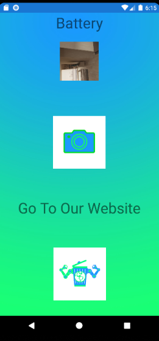

Waste Detector

The Problem
Canadians are throwing too much garbage into their recycling bins, sometimes out of laziness or ignorance and it is costing recycling programs millions of dollars a year. Trash is being put into the wrong bins, can cause many problems such as:
-
Attracting pests
-
Unsanitary conditions
-
Damage to machines that process the trash
-
Contaminated trash can get turned away, causeing more truck trips and pollution Impacts sustainability in a negative way
-
The bottom line is that poor waste management directly affects climate change and air pollution, as wella as many ecosystems and species.
So, my team and I invented a solution to this problem making Canada and the World more eco-friendly.
Artificial Intelligence(AI)

Artificial Intelligence refers to systems or machines that mimic human intelligence to perform tasks and can improve themselves based on the informaion they collect. Our app consists primarily of AI and some of the languages we used were Python, C# and XAML. An AI that will detect the type of trash in garbage bins. It will then tell the user which type of trash is in the wrong bin, such as a cardboard box being in the garbage bin. The user can then easily sort it out. This ai will make sorting trash much more efficient than going through with your hands.
Our App
Below, you will see in steps the break down of our application:
-
The user can move around and take a picture of an item.
-
Next, it processes the data and sends it to the server. Once that is done, a predicted image is sent as a utf8(utf8 is a binary language such as 01101001) encoded string.
-
Then, the app decides the utf8 decoded string to the answer.